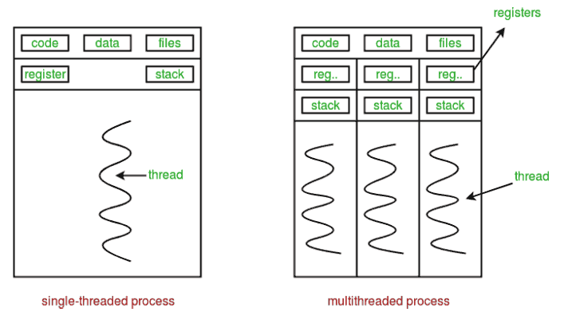

Similar to how the CPU can run multiple processes at the same time, a process can be split into multiple threads, allowing it to carry out multiple tasks concurrently. This allows a process to make better use of the CPU and can significantly improve the responsiveness of a program. A web browser, for example, would be difficult to us if the whole program froze any time the user wanted to load a page. By using multiple threads, the browser can split the different tasks into separate threads so that the CPU will cycle through them as it would with multiple processes.

A process's various threads can share resources, reading from the same memory and files, reducing the resource overhead compared to running multiple separate processes. This can also come at the cost of stability and security, as the shared data can lead to threads interfering with each other in ways the processes cannot. To prevent this, locks are used to only allow one thread to access a given piece of data at a time. There is also an overhead cost to switching from thread to thread, as well as the locks that are used to prevent cross-thread interference, so some tasks are still better off done in sequence, rather than concurrently.
Sources: